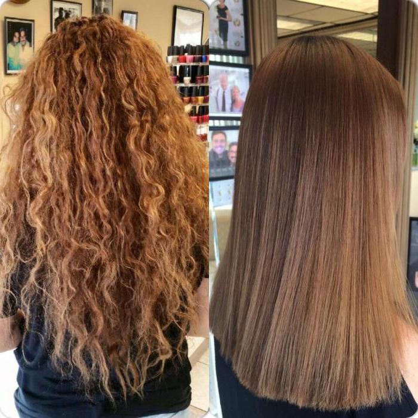

Kerotin
Кератиновый уход за волосами
Кератиновый уход направлен на восстановление и поддержание красоты волос, он предполагает использование различных косметических средств с кератином. Кератин – это белок, который легко усваивается волосами, оказывает реальное восстанавливающее действие в шампунях, бальзамах, кондиционерах, масках, спреях и других продуктах, обеспечивает настоящий профессиональный уход в домашних условиях:
- работает на поверхности: заполняет поврежденные области внешнего слоя волос, устраняет пористость;
- выравнивает поверхность волоса, делает его гладким, облегчает расчесывание;
- работает внутри: восстанавливает структуру волоса, делает его плотным, улучшает его состояние;
- притягивает, накапливает влагу, запирает ее внутри волоса;
- повышает механическую упругость, эластичность, прочность;
- устраняет секущиеся концы;
- возвращает блеск волосам, создает аккуратные локоны.

Что дает кератиновое выпрямление волос: эффект от процедуры
Что дает кератиновое выпрямление волос девушкам, которые вновь и вновь повторяют его, проводя три-четыре сеанса в год для пролонгированного эффекта? Описание конечного результата и то, как выглядят пряди на протяжении нескольких недель после процедуры, — вот и ответ.
Пробежимся по основным плюсам, чтобы понимать, почему кератирование упрощает жизнь, но на этот раз не с точки зрения профессионала, а с позиции гостя салона красоты:
- процедура кератинового выпрямления значительно экономит время на создание причесок, потому что облегчает расчесывание и укладку;
- волосы выглядят максимально густыми (плотными, но не объемными) и гладкими, блестят, красиво струятся;
- разглаженные и мягкие прямые пряди не запутываются и не образуют узелки, их легко расчесать даже мокрыми (но все равно лучше делать это осторожно);
- кератин работает как антистатик: волосы перестают пушиться и электризоваться;
- невидимая кератиновая пленка защищает от ультрафиолета, хлорированной и морской воды. Снижается риск повреждения волос от высоких температур стайлеров, но кератирование не способно полностью заменить термозащитное средство.
Записаться на процедуру